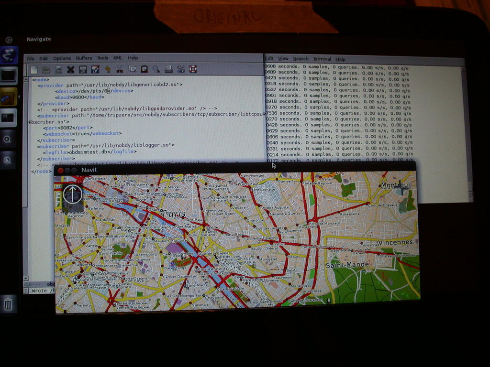

 Ubuntu IVI Remix natively installed on an ExoPC Atom slate tablet. obdsim (part of obdgpslogger) is running in the background right xterm, but is not talking to Navit (yet). The mighty emacs on the upper left shows the nobdy config file. Thanks very much to Intel for the equipment donation!
I installed from a CD drive connected via USB, as I couldn't get installation directly from USB to work for some reason.
The i386 ISO produces an installation which works similarly to the VM one, although I can't get the WiFi to associate stably with an access point despite concerted effort with wpa-supplicant, jockey-gtk, Gnome applets, etc. MeeGo and Ubuntu Maverick desktop image wireless connectivity work fine.
The following presumes that your ISO is in the directory /opt/Ubuntu and that you have the Qemu and kvm tools installed. Most Linux distros provide them. libvirt and libguestfs are useful as well.

Installation on Fedora 14:
In order to install followed by shutdown, run the following bash script as
sudo -u $USER install_Ubuntu_IVI_QemuWithout the -u setting, the script exits with the puzzling "Could not initialize SDL(No available video device) - exiting" error, which is actually from xauth.
#!/bin/bash sudo qemu-img create -f raw /opt/ubuntu_ivi_natty.raw 10G sudo chown alison /opt/ubuntu_ivi_natty.raw qemu-kvm --cdrom /opt/Ubuntu/falmouth-natty-x86-iso-20111219-2.iso -boot d -hda /opt/ubuntu_ivi_natty.raw -m 2048 -usb -soundhw all -net nic,model=e1000 -net user,hostfwd=tcp:127.0.0.1:6666-:22 -vga std -name ubuntu_ivi -localtime -no-reboot
Running post-installation on Fedora 14:
#!/bin/bash qemu-kvm -boot c -hda /opt/ubuntu_nobdy_bldr.raw -m 4096 -usb -soundhw all -net nic,model=e1000 -net user,hostfwd=tcp:127.0.0.1:6666-:22 -vga std -name ubuntu_nobdy_bldr -localtime
Installation on Debian Wheezy. (As noted above, run the script with "sudo -u $USER".)
#!/bin/bash
#Without -u, xauth error:
ROOTDIR=/fedora14/bonnet_f14/opt/opt/Ubuntu
sudo qemu-img create -f raw ${ROOTDIR}/ubuntu_ivi_natty.raw 10G
sudo chown $USER ${ROOTDIR}/ubuntu_ivi_natty.raw
qemu-system-i386 --enable-kvm --cdrom ${ROOTDIR}/falmouth-natty-x86-iso-20111219-2.iso -boot d -hda ${ROOTDIR}/ubuntu_ivi_natty.raw -m 4096 -net nic,model=e1000 -net user,hostfwd=tcp:127.0.0.1:6666-:22 -name ubuntu_ivi_natty -localtime -no-reboot
Running post-installation on Debian Wheezy:
#!/bin/bash qemu-system-i386 --enable-kvm -boot c -hda /fedora14/ubuntu_ivi_natty.raw -m 4096 -net nic,model=e1000 -net user,hostfwd=tcp:127.0.0.1:6666-:22 -name ubuntu_ivi_natty -localtime
Note this bug report on Wheezy:
If I do not specify VGA driver at all, meaning I do not use "vga=std" or "vga=vmware", things work as expected needing no change in any other parameter. So, it really was the VGA driver the one making "qemu -enable-kvm" not to work.
I gave the VM 10GB of real disk space. If your disk doesn't have that much space, you can allot less. What the minimum reasonable amount might be, I don't know.
The installer is a fairly typical Linux one except that IT WRITES OVER THE WHOLE DISK WITHOUT ASKING. Now I warned you twice!
Note that I said "-no-reboot". When the installation finishes, the VM will shut down. That way you can watch the reboot or start with different settings for normal operation.
I allotted the VM 2 GB of real memory. Once again, if this chokes your system, allot the VM less.
By default, the image comes with no GUI. Nonetheless, booting into it with the script above takes the user to vt7, where nothing is running. In Fedora 14's Qemu, switch to vt1 by typing "alt-f1", not "ctl-alt-f1", since "ctl-alt" is a Qemu keyboard shortcut to free the mouse cursor. On Debian Wheezy, follow the instructions under "How to get Qemu monitor" to switch to the console.
As with any new installation, type "apt-get update." Note that the datasheet says:
The IVI Remix does not include a user interface or HMI by default. A sample user experience using Unity2d (based on Qt) and including UbuntuOne support and several sample applications is available for installation.
Read the "Demo Ubuntu IVI packages" section in the Release Notes. In fact, "apt-cache pkgnames | grep unity" shows 9 packages with "unity-2d" in the name. "apt-get install unity-2d-head" pulls most of these packages. Be sure to choose "unity-2d-head" rather than "unity-2d," which does not pull down gdm, resulting in a black blank screen on vt7 upon reboot. You might also want to install other utilities like emacs, mlocate and man, while you're at it.
Also install ivi-demo, as otherwise this whole exercise is pointless. It's another giant installation.
Reboot again. gdm should come up.

That's better. As promised by the datasheet, the Ubuntu IVI Remix doesn't have a lot of software in it. The kernel is 2.6.38-8, presumably because the basis is the older 11.04 release.

For a VM, follow the wiki instructions under "Simpler Example invocation method 2 for systems with a network connection." The "without a network connection" instructions work on the ExoPC hardware.